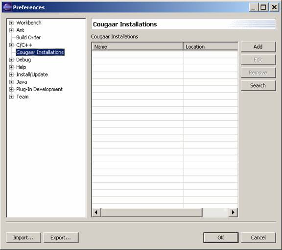
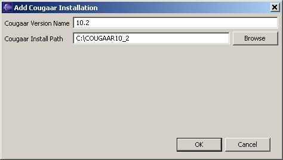
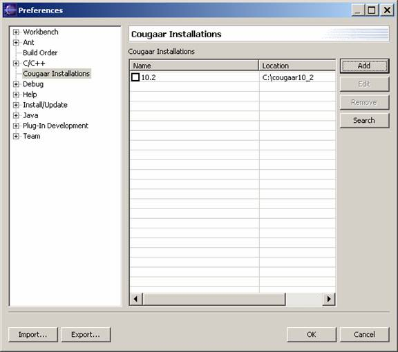

CougaarIDE Use:
Managing Cougaar Installations
Select Window->Preferences to bring up the preference menu and then
highlight the Cougaar Installations item in the tree view on
the left side of the window.

Here you will be able to add, edit, and remove the Cougaar
Installations for your Eclipse Workspace.
Click the Add button to add a new Cougaar installation
and enter the name to use for the installation (can be arbitrary but
must
be unique).Then use the browse
button to select the directory of the Cougaar install path.

Click OK when complete. The new installation will be
added to your install list.
